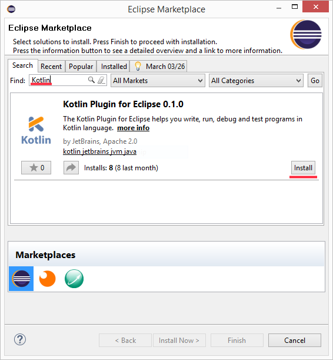
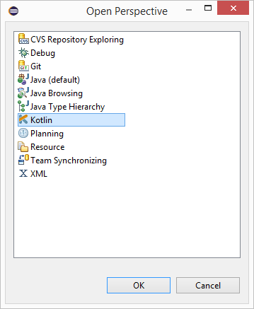
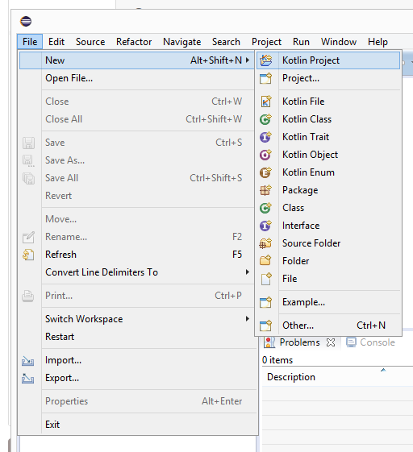
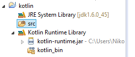
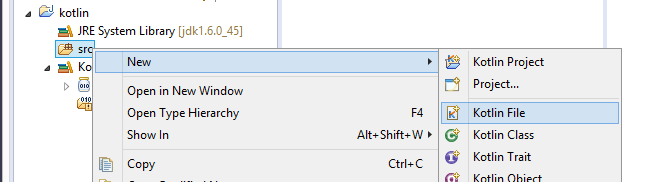
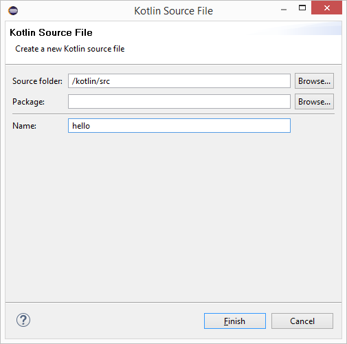
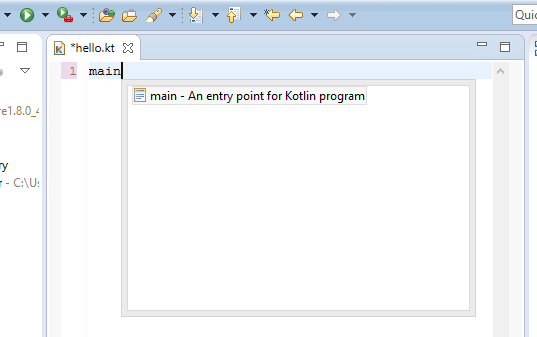
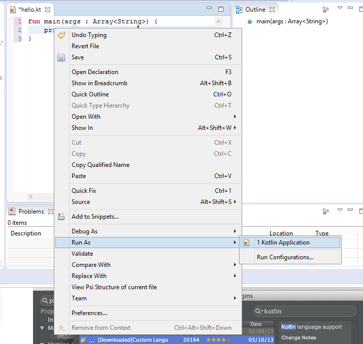
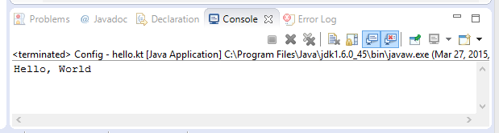

Kotlin Eclipse 环境搭建
Eclipse 通过 Marketplace 安装 Kotlin 插件，打开 Eclipse，选择 Help -> Eclipse Marketplace… 菜单，搜索 Kotlin 插件：

然后重启 Eclipse 选择 Window -> Open Perspective -> Other...，如果看到了 Kotlin 选项表明安装成功。

创建新项目
选择 File -> New -> Kotlin Project 来创建 Kotlin 项目：

创建成功后，项目结构如下：

接下来 我们点击 src 文件夹，创建一个 Kotlin 文件，不用写 ".kt" ，默认自动添加，它可以任意命名，这里我们创建 hello


接下来，我们在 hello.kt 文件中写点代码。Eclipse 为我们提供了一个快速完成此操作的模板，只需键入 main 然后按 Enter 即可。

运行应用
接下来我们在 hello.kt 的编辑框内右击鼠标选择 Run As -> Kotlin Application 即可运行：

运行成功后就可以在窗口 Console 中看到结果。

这样我们第一个 Kotlin 代码就运行起来了。